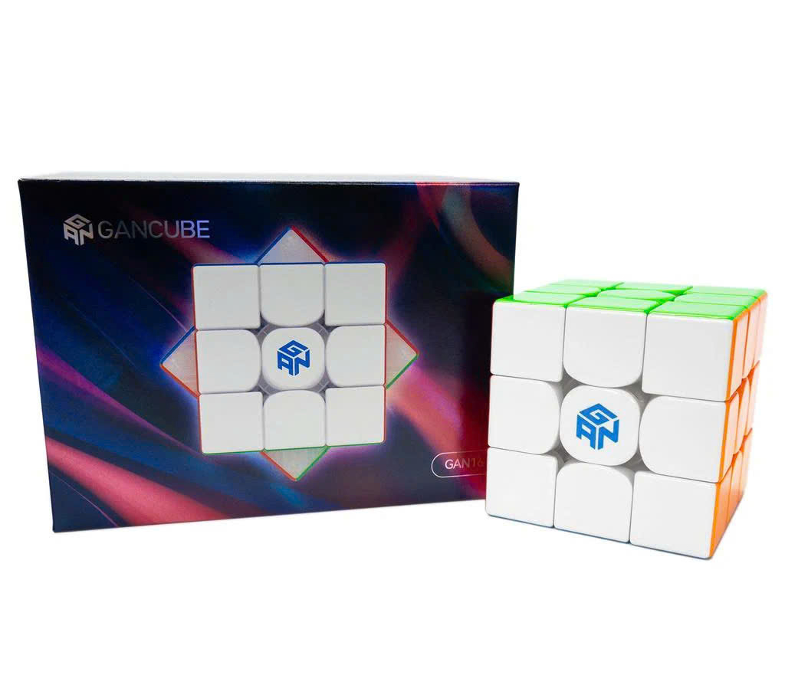
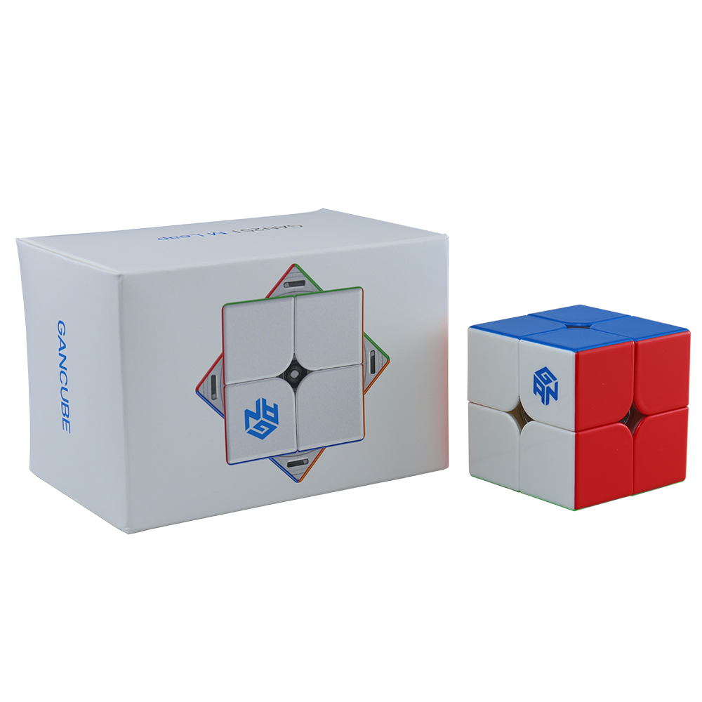
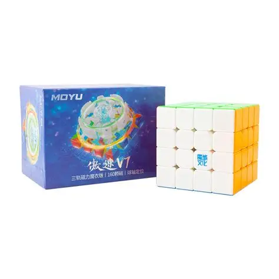
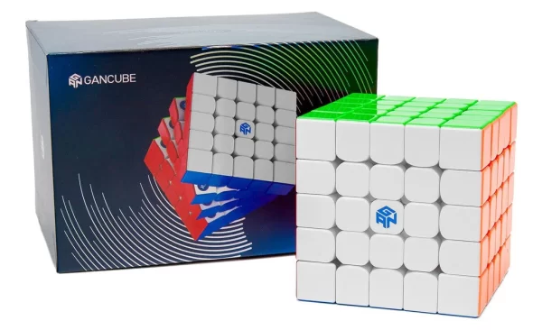
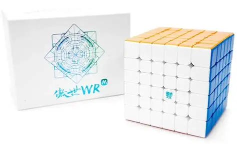
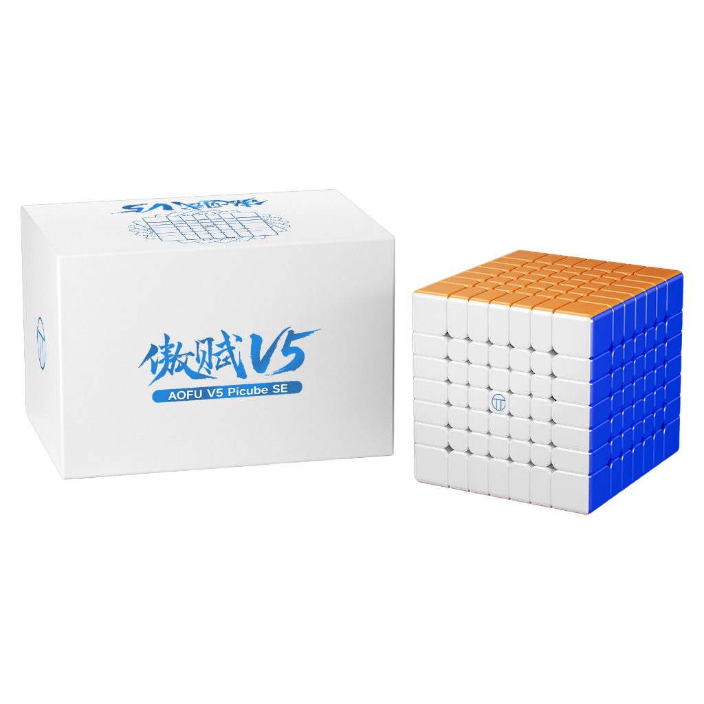
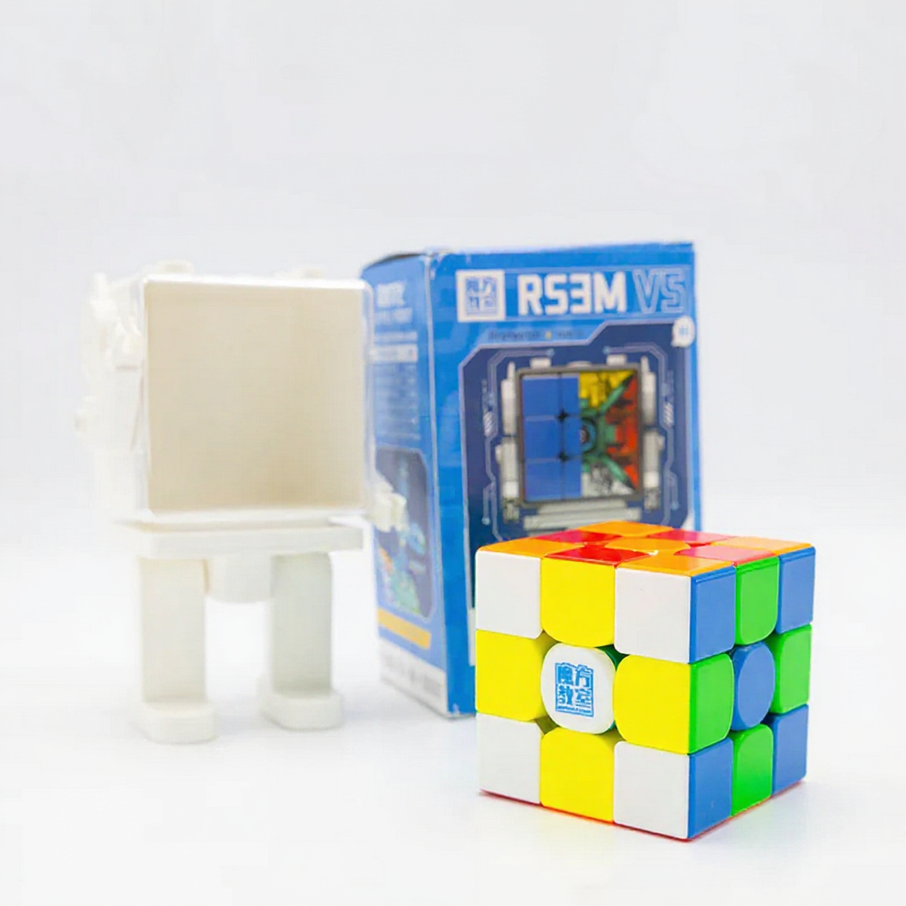

Skip to main content
3x3x3 Rubik's Cube
Gan 16 Max UV

2x2x2 Rubik's Cube
Gan 251 M Leap

4x4x4 Rubik's Cube
Movu Aosu V7

5x5x5 Rubik's Cube
Gan 5x5 UV

6x6x6 Rubik's Cube
Moyu Aoshi WRM

7x7x7 Rubik's Cube
Picude Moyu Aofu V5 UV

3x3x3 Rubik's Cube (One-Handed)
Moyu RS3V5 ballcore UV
